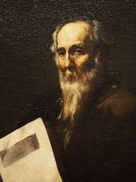
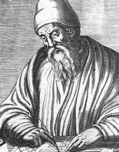
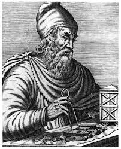
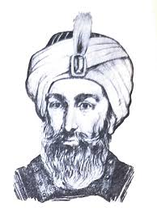

A ORIGEM DA MATEMÁTICA
A matemática não nasceu em uma sala de aula, nem em um livro. Ela nasceu da necessidade humana. Quando os primeiros grupos humanos começaram a viver em comunidade, surgiu um problema básico: como controlar a realidade ao redor. Era preciso contar alimentos, dividir terras, saber quando plantar e quando colher.
Por volta de 3000 a.C., civilizações antigas começaram a criar sistemas numéricos. Na Mesopotâmia, os povos sumérios desenvolveram um sistema baseado no número 60. É por isso que até hoje usamos 60 segundos em um minuto e 60 minutos em uma hora. Já no Egito Antigo, a matemática estava ligada à construção e à religião. Para erguer as pirâmides, era necessário medir ângulos, calcular áreas e manter proporções exatas.
Nesse período, a matemática era totalmente prática. Não existiam fórmulas abstratas tudo era feito para resolver problemas reais do cotidiano.
OS GRANDES CRIADORES DA MATEMÁTICA
Pitágoras
Pitágoras não via a matemática apenas como números, mas como a ordem do universo. Para ele, tudo podia ser explicado por relações numéricas. Sua escola misturava matemática, filosofia e até espiritualidade. O famoso Teorema de Pitágoras não foi apenas uma descoberta geométrica, mas uma forma de mostrar que o mundo seguia regras lógicas.
Euclides
Euclides organizou a matemática. Antes dele, o conhecimento era espalhado. Em sua obra Os Elementos, ele reuniu definições, axiomas e teoremas de forma lógica. Foi como criar um manual da matemática, usado por mais de 2.000 anos. A geometria que você aprende hoje na escola ainda segue a base criada por ele.
Arquimedes
Arquimedes levou a matemática para a física. Ele queria entender como os objetos flutuam, como calcular volumes e áreas de formas complexas. Sua obsessão por descobrir o valor de π mostrou que a matemática podia ser usada para explicar fenômenos naturais.
Al-Khwarizmi
Al-Khwarizmi revolucionou tudo ao criar a álgebra. Ele mostrou que era possível resolver problemas usando letras no lugar de números. Seu trabalho é tão importante que a palavra algoritmo vem do seu nome. Sem ele, não existiria programação como conhecemos hoje.
A EVOLUÇÃO DA MATEMÁTICA
A matemática evoluiu conforme a humanidade se tornava mais complexa. Na Idade Média, os números romanos começaram a ser substituídos pelos números indo-arábicos, que facilitaram cálculos. Isso impulsionou o comércio e a ciência.
No Renascimento, a matemática ganhou força com o estudo de gráficos, equações e movimentos. Cientistas como Newton e Leibniz criaram o cálculo, permitindo entender velocidade, aceleração e mudanças contínuas.
Já na Era Moderna, a matemática deixou de ser apenas teórica e passou a ser a base da tecnologia. Computadores, estatísticas, probabilidades e lógica matemática moldaram o mundo atual.
OS RAMOS DA MATEMÁTICA
A matemática se dividiu em áreas para resolver diferentes tipos de problemas:
- Aritmética: lida com contas simples, essenciais para o dia a dia.
- Geometria: estuda formas, espaços e dimensões.
- Álgebra: resolve problemas gerais usando símbolos.
- Estatística: analisa dados e previsões.
- Cálculo: estuda variações, movimentos e mudanças.
- Cada ramo nasceu porque o ser humano precisava entender melhor o mundo.
O USO DA MATEMÁTICA HOJE
Hoje, a matemática é invisível, mas está em tudo. Quando você usa um celular, há milhares de cálculos acontecendo por segundo. Bancos usam matemática para juros e investimentos. No futebol, estatísticas ajudam técnicos a decidir táticas e posições.
Na tecnologia, a matemática é a linguagem principal. Programação, inteligência artificial, jogos e sistemas dependem de algoritmos matemáticos. Sem matemática, não existiria internet, GPS ou redes sociais.
O FUTURO DA MATEMÁTICA
No futuro, a matemática será ainda mais importante. Ela será usada para:
- Desenvolver inteligências artificiais mais avançadas
- Analisar grandes volumes de dados
- Resolver problemas climáticos e médicos
- Automatizar processos complexos
A matemática não é algo do passado. Ela é uma ferramenta viva, que cresce junto com a humanidade.